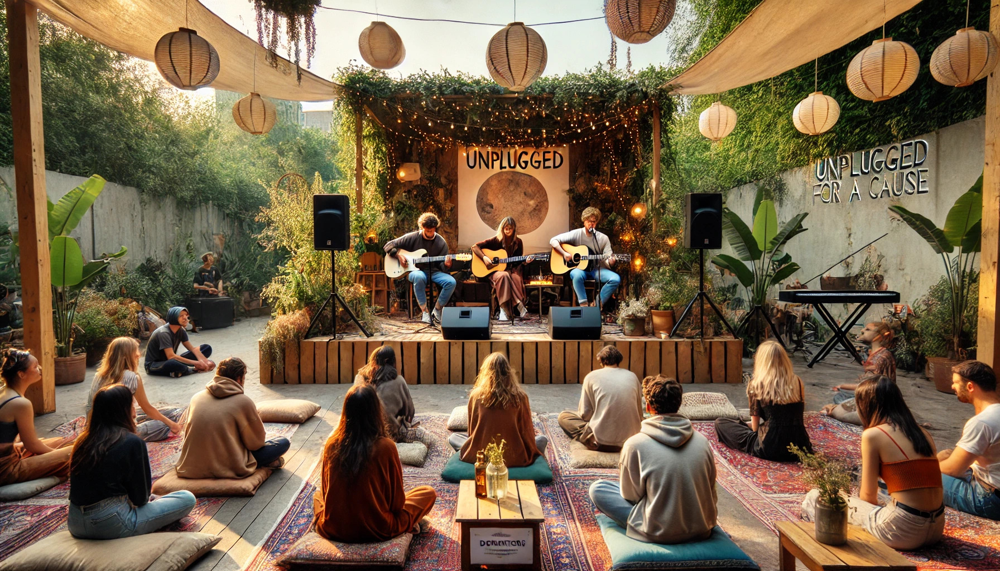

Parroquia Asunción de María
Industrial, Gustavo A. Madero, Ciudad de México
Industrial, Gustavo A. Madero, Ciudad de México
El objetivo del Coro Asunción de María es colaborar activamente en la liturgia, brindando apoyo evangelizador y reforzando cada parte de la Santa Misa, al mismo tiempo que sensibiliza tanto a los miembros de la comunidad como a los propios integrantes del coro.
A través del canto y diversas actividades, el Coro Asunción de María busca ser un vehículo de evangelización, promoviendo el mensaje del evangelio y fortaleciendo los lazos con la comunidad. Además, se busca contribuir al desarrollo integral de cada uno de sus miembros, fomentando su crecimiento espiritual, personal y musical.
A lo largo del año, el coro CAM tiene varias actividades, pero entre ellas resaltan dos en especial que son aparte de su participación en la liturgia dominical semanal.

Para más información sobre el Coro Asunción de María, síguenos o contáctanos a través de nuestras redes sociales: